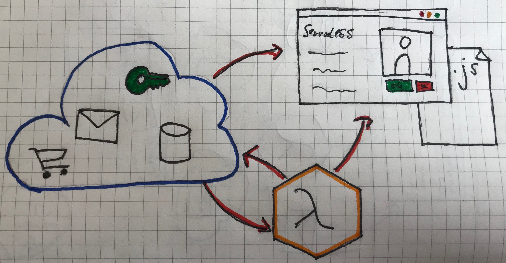
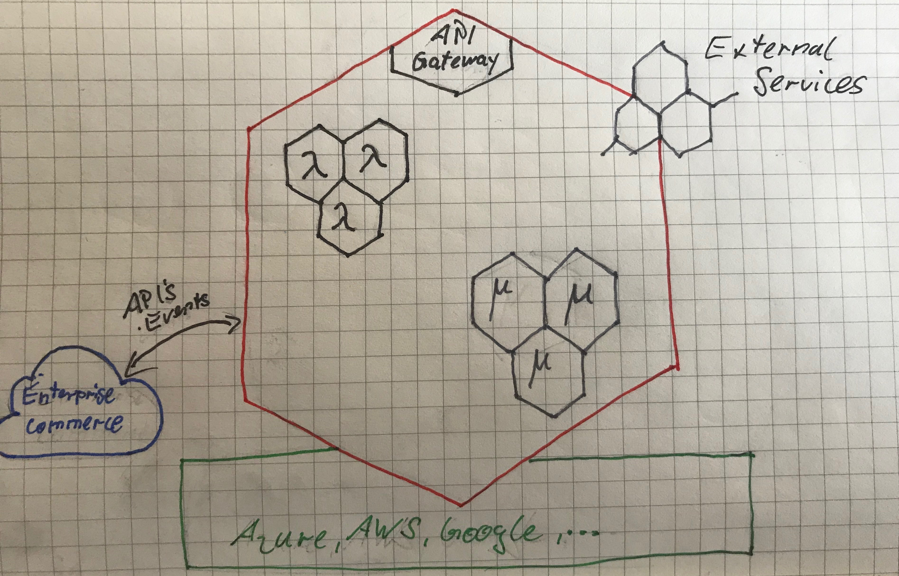

<!doctype html>
<html>
	<head>
		<meta charset="utf-8">
		<meta name="viewport" content="width=device-width, initial-scale=1.0, maximum-scale=1.0, user-scalable=no">

		<title>reveal.js</title>

		<link rel="stylesheet" href="css/reveal.css">
		<link rel="stylesheet" href="css/theme/black.css">

		<!-- Theme used for syntax highlighting of code -->
		<link rel="stylesheet" href="lib/css/zenburn.css">

		<!-- Printing and PDF exports -->
		<script>
			var link = document.createElement( 'link' );
			link.rel = 'stylesheet';
			link.type = 'text/css';
			link.href = window.location.search.match( /print-pdf/gi ) ? 'css/print/pdf.css' : 'css/print/paper.css';
			document.getElementsByTagName( 'head' )[0].appendChild( link );
		</script>
	</head>
	<body>
		<div class="reveal">
			<div class="slides">
				<section>
					<h2>Serverless Technologies</h2>
					Johannes Engelke, 2018

					<aside class="notes">
						Before we start:
						<ul>
							<li>Who knows AWS Lambdas?</li>
							<li>Who has used them?</li>
						</ul>
					</aside>
				</section>
				<section>
					<small><small>
						<p>Weitergabe und Vervielfältigung dieser Publikation oder von Teilen daraus sind, zu welchem Zweck und in welcher Form auch immer, ohne die ausdrückliche schriftliche Genehmigung durch SAP SE oder ein SAP-Konzernunternehmen nicht gestattet.</p>
						<p>In dieser Publikation enthaltene Informationen können ohne vorherige Ankündigung geändert werden. Die von SAP SE oder deren Vertriebsfirmen angebotenen Softwareprodukte können Softwarekomponenten auch anderer Softwarehersteller enthalten. Produkte können länderspezifische Unterschiede aufweisen.</p>
						<p>Die vorliegenden Unterlagen werden von der SAP SE oder einem SAP-Konzernunternehmen bereitgestellt und dienen ausschließlich zu Informationszwecken. <br/>
							Die SAP SE oder ihre Konzernunternehmen übernehmen keinerlei Haftung oder Gewährleistung für Fehler oder Unvollständigkeiten in dieser Publikation. <br/>
							Die SAP SE oder ein SAP-Konzernunternehmen steht lediglich für Produkte und Dienstleistungen nach der Maßgabe ein, die in der Vereinbarung über die jeweiligen Produkte und Dienstleistungen ausdrücklich geregelt ist. Keine der hierin enthaltenen Informationen ist als zusätzliche Garantie zu interpretieren. </p>
						<p>Insbesondere sind die SAP SE oder ihre Konzernunternehmen in keiner Weise verpflichtet, in dieser Publikation oder einer zugehörigen Präsentation dargestellte Geschäftsabläufe zu verfolgen oder hierin wiedergegebene Funktionen zu entwickeln oder zu veröffentlichen. Diese Publikation oder eine zugehörige Präsentation, die Strategie und etwaige künftige Entwicklungen, Produkte und/oder Plattformen der SAP SE oder ihrer Konzernunternehmen können von der SAP SE oder ihren Konzernunternehmen jederzeit und ohne Angabe von Gründen unangekündigt geändert werden. Die in dieser Publikation enthaltenen Informationen stellen keine Zusage, kein Versprechen und keine rechtliche Verpflichtung zur Lieferung von Material, Code oder Funktionen dar. Sämtliche vorausschauenden Aussagen unterliegen unterschiedlichen Risiken und Unsicherheiten, durch die die tatsächlichen Ergebnisse von den Erwartungen abweichen können. Dem Leser wird empfohlen, diesen vorausschauenden Aussagen kein übertriebenes Vertrauen zu schenken und sich bei Kaufentscheidungen nicht auf sie zu stützen.</p>
						<p>SAP und andere in diesem Dokument erwähnte Produkte und Dienstleistungen von SAP sowie die dazugehörigen Logos sind Marken oder eingetragene Marken der SAP SE (oder von einem SAP-Konzernunternehmen) in Deutschland und verschiedenen anderen Ländern weltweit. Alle anderen Namen von Produkten und Dienstleistungen sind Marken der jeweiligen Firmen. <br/>
							Zusätzliche Informationen zur Marke und Vermerke finden Sie auf der Seite <a href="https://www.sap.com/corporate/de/legal/copyright.html">https://www.sap.com/corporate/de/legal/copyright.html</a>.</p>
					</small></small>
				</section>
				<section>
					<h2>Who am I?</h2>
					<div style="text-align: left; float: left;">
						<ul>
							<li>Product Owner Serverless @ SAP Hybris</li>
							<li>Go developer</li>
							<li>Robot enthusiast</li>
						</ul>
					</div>
				</section>
				<section>
					<section>
						<h2>Serverless Applications</h2>
						<blockquote cite="https://martinfowler.com/bliki/Serverless.html">
							"...rely solely on a combination of third-party services, client-side logic, and service hosted remote procedure calls (FaaS)."
						</blockquote>
						<small>https://martinfowler.com/bliki/Serverless.html</small>
					</section>
					<section>
						<h2>Serverless Applications</h2>
						
					</section>
					<section>
						<h2>FaaS vs. PaaS</h2>
						<table>
							<thead>
								<tr>
									<th>FaaS</th><th>PaaS</th>
								</tr>
							</thead>
							<tbody>
								<tr>
									<td>Functions</td>
									<td>(Micro-) Service</td>
								</tr>
								<tr>
									<td>Execution</td>
									<td>Memory / hour</td>
								</tr>
								<tr>
									<td>Autoscaling</td>
									<td>Manual Scaling</td>
								</tr>
								<tr>
									<td>Integrated</td>
									<td>Flexible</td>
								</tr>
							</tbody>
						</table>
					</section>
					<section>
						
						<aside class="notes">
							<ul>
								<li>Most of the FaaS providers are Infrastructure service providers</li>
								<li>They are providing low level services which can be extended with Functions like AWS Lambda</li>
								<li>FaaS could be way more powerfull if they are used to extend high level services</li>
							</ul>
						</aside>
					</section>

					<section data-background-image="images/machineroom.jpeg">
						<!-- https://www.pexels.com/photo/landmark-ship-architecture-american-53562/ -->
						<aside class="notes">
							<ul>
								<li>All thees veondors got one thing in common:</li>
								<ul>
									<li>They are all infrastructure service providers</li>
									<li>They provide low level services</li>
								</ul>
							</ul>
						</aside>
					</section>
				</section>
				<section>
					<section data-background-image="images/enterprise.jpeg">
						<!-- https://www.pexels.com/photo/sea-holiday-vacation-blue-69122/ -->
						<div style="background-color: rgba(0, 0, 0, 0.9); color: #fff; padding: 20px;">
							<h2>Enterprise Applications</h2>
							<aside class="notes">
								<p>Pertty much a happy place</p>
								<p>Major issues are solved by Enterprise Apps</p>
								<p>OnPremise installations of E Apps enables lots of constomizations</p>
								<p>The Applications can be adjusted to the needs of the customer</p>
							</aside>
						</div>
					</section>

					<section data-background-image="images/airlander.jpg">
						<!-- <div class="fragment" style="background-color: rgba(0, 0, 0, 0.9); color: #fff; padding: 20px;">
							<h2>In the Cloud</h2>

							<small><quote>https://commons.wikimedia.org/wiki/File:Airlander_(33259911463).jpg</quote></small>
						</div> -->
						<aside class="notes">
								<p>If Enterprise apps in the cloud, be carefull to not end up like this....</p>	
								<p>There are several reason, why it is tricky.</p>
								<ol>
									<li>Expectations</li>
									<li>Responibilites</li>
									<li>Location</li>
									<li>Speed</li>
								</ol>
							</aside>
					</section>
					<section>
						<div class="fragment">
							<h2>Serverless</h2>
							
						</div>
						<aside class="notes">
								<p>Why it is tricky to fullfill customer requirements:<br/>
									<ul>
										<li>OnPrem Software, Configuration and Extensions are bundeled and deployed by the same org.</li>
										<li>This is not possible in the cloud</li>
										<li>The Cloud Ops team, has to guard the application from external influences, to be able to manage them on scale.</li>
									</ul>
								</p>
	
								<p>That said:<br/>
									<ul>
										<li>Especially Extensions has to be externalised and decoubpled from the core application</li>
										<li>Exntesibility has still to be as easy as it was in the past</li>
										<li>On top, we have to provide solutions, to meet "cloud expectations"</li>
										<li>
											<ul>
												<li>Selfservice</li>
												<li>Fast deployments</li>
												<li>Always on</li>
												<li>Backuped</li>
												<li>Secured</li>
												<li>...</li>
											</ul>
										</li>
									</ul>
								</p>
							</aside>
					</section>
					<section>
						<h2>
							Requirements
						</h2>
						<ul>
							<li>Deep integration</li>
							<li>Events</li>
							<li>API's</li>
							<li>Platform Agnostic</li>
						</ul>
					</section>
				</section>
				<section>
					<h2>SAP Hybris Service Factory</h2>
					
					<aside class="notes">
						<p>Serverless as a extension paltform for Enterprise Apps in the cloud is basically one of the core concepts of the Service Factory</p>

						<p>It is based on Kubernetes and due to the use of K8s std. components and concepts, it is possible to enable mycrosevice based extensions as well as lambda based ones.</p>

						<p>There is a out of the box integration with the Enterprise systems available using Web API's and Events.</p>

						<p>Beside that, an integration with 3rd party systems will be provided using the open service broker standard.</p>
					</aside>
				
				</section>
				<section>
					<section>
						<h2>Kubeless</h2>
						<ul>
							<li>Python, Node.js, Ruby and custom runtimes</li>
							<li>Build by Bitnami</li>
							<li>Kubernetes Native</li>
							<li>Prometheus monitoring and autoscaling</li>
							<li>Serverless Framework plugin</li>
						</ul>
					</section>
					<section data-background-video="images/tty.mp4">
					</section>
					<section data-background-image="images/kubeless.jpg" data-background-size="80%">
					</section>
					<section>
						<h2>Integrations</h2>
						<ul>
							<li>Istio</li>
							<li>Open Service Broker</li>
							<li>Custom Event Trigger</li>
							<li>Client Libs</li>
						</ul>
					</section>
				</section>
				<section data-background-iframe="https://beershop.local/" data-background-interactive>
					<aside class="notes">
						<ul>
							<li>Just int front: The shop is not based on Hybris Commerce</li>
							<li>As I try to have a independent demo, I used the YSF to build my own small webshop</li>
							<li>Maybe later, I will implement a full example</li>
						</ul>
					</aside>
				</section>
				<section>
					<section>
						<h2>Face Login</h2>
					</section>
					<section data-background-image="images/facelogin.jpg" data-background-size="80%">

					</section>
					<section>
						<h2>ToDo's</h2>
						<ul>
							<li>Setup Facebox from <a href="https://machinebox.io/">machinebox.io</a></li>
							<li>Train User Function</li>
							<li>Login User Funciton</li>
							<li>UI Integration</li>
						</ul>
					</section>
					<section>
						<h2>Demo</h2>
						<a href="https://beershop.local/" target="_bank">Beershop</a>
					</section>
				</section>
				<section>
					<h1>Thank you</h1>
					@quablab<br/> johannes.engelke@sap.com<br/> github.com/joek
				</section>


			</div>
		</div>

		<script src="lib/js/head.min.js"></script>
		<script src="js/reveal.js"></script>

		<script>
			// More info about config & dependencies:
			// - https://github.com/hakimel/reveal.js#configuration
			// - https://github.com/hakimel/reveal.js#dependencies
			Reveal.initialize({
				dependencies: [
					{ src: 'plugin/markdown/marked.js' },
					{ src: 'plugin/markdown/markdown.js' },
					{ src: 'plugin/notes/notes.js', async: true },
					{ src: 'plugin/highlight/highlight.js', async: true, callback: function() { hljs.initHighlightingOnLoad(); } }
				]
			});
		</script>
	</body>
</html>
